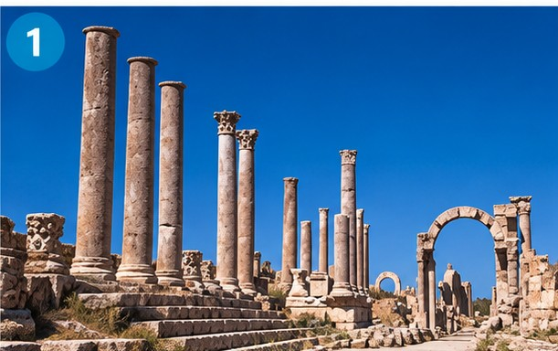
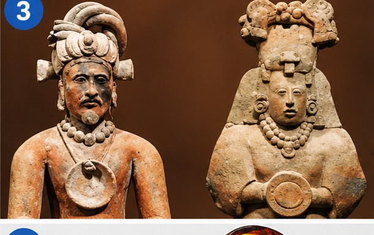
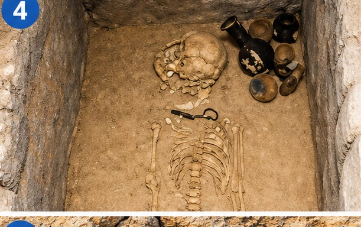
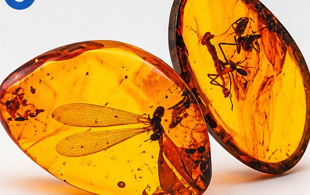
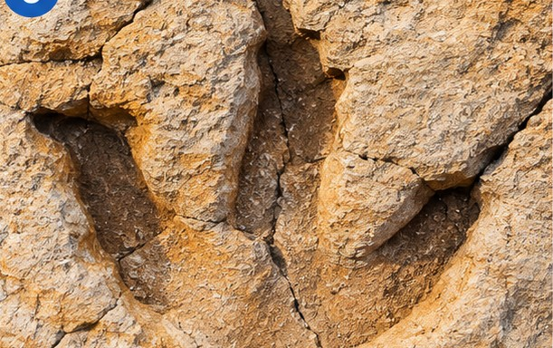

Wordlist — Stepping back in time
These words appear across today's readings on prehistoric humans. Study the table, then complete the sentences below.
| word / phrase | meaning |
|---|---|
| artefacts | objects, especially very old ones, of historical interest |
| burial site | an area of land where dead bodies are buried |
| die out | to become more and more rare and then disappear completely |
| division of labour | a way of organising work so that different people are responsible for different tasks |
| fossilisation | the process of becoming a fossil |
| heritage | the buildings, customs, etc. that are important in a culture because they have existed for a long time |
| implement (n) | a tool |
| insight into something | a way of understanding what something is really like |
| refuge | a place where you are protected from danger |
| stocky | having a wide, strong body |
| trait | a quality in someone's character |
| widespread | existing in a lot of places |
Complete the sentences with words or phrases from the table. Use the correct grammatical form.
1. Archaeologists found stone tools and other at the site, giving clues about how the people who made them once lived.
2. The remains were discovered at an ancient , where the community had buried its dead for generations.
3. Many large Ice Age mammals within a few thousand years of the climate changing.
4. Early human groups relied on a clear , with different members responsible for hunting, gathering or toolmaking.
5. The of remains over thousands of years is what gradually turns bone into stone.
6. Cave art and burial rituals are considered part of our shared cultural .
7. A simple stone hand-axe is an effective for cutting and scraping.
8. Studying ancient DNA gives scientists an how early human groups interacted with one another.
9. A large, dry cave could act as a from storms, cold weather and dangerous animals.
10. Neanderthals had a notably and muscular build, well suited to a cold climate.
11. Cooperation within a group appears to have been a key that helped early humans survive.
12. Simple stone toolmaking techniques became remarkably across Africa, Europe and Asia within a relatively short period.
Prehistoric life — photo captions
Each photo shows evidence archaeologists use to study the past. Complete the caption under each one, using a word or phrase from the box.
Two words in the box are not needed for any caption.

Sites like this one are part of humanity's shared cultural .

Marine archaeologists carefully recover ancient from shipwrecks like this one.

Objects like these figurines offer scientists a valuable the beliefs of ancient societies.

Archaeologists carefully excavate this ancient to learn how the community treated its dead.

The of these insects in tree resin lets scientists study them in detail today.

This fossilised footprint may have been left by a large stalking its prey.
Reading — How Did Prehistoric Humans Survive?
A short article on the behaviours that let early humans survive a genuinely hostile world. Read it carefully, then answer the questions below.
How Did Prehistoric Humans Survive?
Long before agriculture, writing or permanent settlements existed, early humans faced a hostile and unpredictable world: repeated ice ages, unreliable food supplies, and predators far stronger than any single person. No individual skill explains how our species made it through hundreds of thousands of years of this. Instead, survival appears to have depended on a combination of behaviours that, together, gave early humans a decisive edge over other animals.
Perhaps the most transformative of these was the controlled use of fire. Beyond simple warmth, fire kept dangerous predators at a distance, extended the number of hours in the day during which a group could safely work or socialise, and — critically — made cooking possible. Cooked food is generally easier to digest than raw food, releases more of its nutritional value, and kills many of the harmful organisms it might otherwise carry, meaning that fire likely improved both the quantity and the safety of the calories early humans could obtain.
Toolmaking extended what the human body alone could do. Early stone flakes, useful mainly for basic cutting, gradually gave way to more carefully shaped hand-axes and, later, to spear points that allowed hunting from a distance rather than at dangerously close range. Each advance in toolmaking effectively extended a group's reach, letting them butcher large animals efficiently, work hides into usable material, and defend themselves more safely.
Shelter and clothing mattered just as much as tools. Natural refuges such as caves and rock overhangs offered protection from weather and predators, while clothing made from animal hides allowed groups to survive, and eventually settle, in far colder regions than would otherwise have been possible. Without this ability to manufacture warmth, entire areas of Ice Age Europe and Asia would likely have remained permanently out of reach.
Underlying all of this was cooperation. Hunting large, dangerous animals was rarely a one-person undertaking; it required coordinated group effort, a working division of labour, and enough shared language to plan an attack and warn of danger. Just as importantly, knowledge did not have to be reinvented by every generation: skills for making tools, finding water, or treating an injury could be observed, taught and passed on, so that each generation started from what the last one had already learned, rather than from nothing.
No single one of these behaviours — fire, tools, shelter or cooperation — would likely have been sufficient on its own. It was the combination, reinforcing and depending on one another, that let scattered, vulnerable communities cope with a genuinely dangerous and constantly changing world. In a real sense, the habits that let prehistoric humans survive are also the foundation of much that still defines human societies today.
Useful chunks from this text:
- "a hostile and unpredictable world"
- "gave early humans a decisive edge"
- "extended what the human body alone could do"
- "gradually gave way to"
- "out of reach" (impossible to access)
- "a working division of labour"
- "reinforcing and depending on one another"
Comprehension
1. According to the article, what did fire allow groups to do, beyond providing warmth?
2. Why was cooked food generally an advantage, according to the passage?
3. What let early humans survive, and eventually settle, in much colder regions?
4. What does the article mean by saying each generation did not have to "start from nothing"?
5. What is the article's overall conclusion about prehistoric human survival?
Written summary (3–4 sentences)
Summarise, in your own words, which behaviours the article says were essential to prehistoric human survival, and why.
Speaking summary
Useful phrases:
- "This article looks at…"
- "One point the writer makes is…"
- "If I had to choose, I'd say…"
- "That's because…"
- "Overall, the article argues that…"
Reading — Last Man Standing
A real IELTS-style reading window, exactly like the ones you're used to — built right into this page rather than as a separate file. Drag the divider to resize the panes, select text to highlight it, and use the question tiles at the bottom to jump between questions.
Useful chunks from this passage:
- "as recently as"
- "by far the best understood"
- "remains one of archaeology's most debated questions"
- "rather than being replaced outright"
- "a genetic trace of contact"
- "quite what led to" (the cause of something is unclear)
- "taken together" (considering everything as a whole)
Grammar and vocabulary — based on "Last Man Standing"
Two harder exercises built entirely from the reading passage you just finished.
Grammar: modals of deduction about the past. Complete each sentence using may have / might have / could have / must have + the past participle of the verb in brackets. Read the passage's own wording carefully — some claims are presented as near-certain, others as genuine speculation, and this should guide which modal fits best. Where more than one modal is possible, any one of them will be accepted.
1. Neanderthals and early Homo sapiens (interbreed) more than once, since many people today carry Neanderthal DNA.
2. A nearby volcanic eruption (wipe out) the last population of Homo floresiensis, though this remains unconfirmed.
3. Without a wide network of allies, isolated Neanderthal groups (struggle) more during sudden shifts in climate.
4. Given how sophisticated their tools were, Neanderthals (possess) real cognitive skill.
5. Homo floresiensis (evolve) its small body size after many generations of isolation on Flores.
6. Some researchers argue that a broader diet (give) Homo sapiens extra resilience during hard years, though this is still debated.
7. Because only a few Denisovan bones have ever been found, entire populations (leave) very little trace in the fossil record.
8. Given how widely early toolmaking techniques spread, the underlying know-how (pass) between different groups somehow.
Vocabulary: word formation. Complete each sentence with the correct form of the word in brackets.
1. The Neanderthals' (EXTINCT) remains one of archaeology's most debated puzzles.
2. Genetic evidence shows that (INTERBREED) between the two species happened more than once.
3. Early Homo sapiens seem to have been unusually (ADAPT) to changing environments.
4. Neanderthal communities may have lived in relative (ISOLATE) from one another.
5. Most non-African people today carry a trace of Neanderthal (ANCESTOR) in their DNA.
6. Within a few thousand years, every one of these other lineages had effectively (VANISH).
7. Simple stone toolmaking techniques eventually became (SPREAD) across three continents.
8. Their unusual physical (ROBUST) helped Neanderthals cope with a cold climate.
9. Scientists believe island (DWARF) explains the unusually small size of Homo floresiensis.
10. Much of what we know about extinct human species is based on careful (DEDUCE) from limited evidence.
Day 15 complete! 🎉
All 5 tasks done — strong work on today's archaeology readings. Come back tomorrow for the next day.